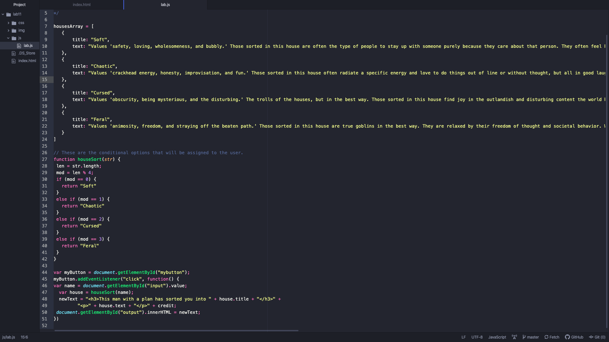

Lab 11: Conditionals
Challenges
I legit do not know why this javascript coding isn't showing, but I know it's because of some tiny typo that I made. So I did the best I could with this one but it was indeed challenging.
Results
An html index, with a conditional array of choices of which personality you truly are. (The houses are Soft, Chaotic, Feral, and Cursed.)
Soft
Values 'safety, loving, wholesomeness, and bubbly.' Those sorted in this house are often the type of people to stay up with someone purely because they care about that person. They often feel bubbly and happy and safe. On days that end in Y, these people have heart emojis floating around their head.
Choatic
Values 'crackhead energy, honesty, improvisation, and fun.' Those sorted in this house often radiate a specific energy and love to do things out of line or without thought, but all in good laughs so that no one is harmed. They love banter and have a super fun and honest personality. If you encounter a chaotic person in the tall grass, they'll most likely be wearing an inflatable T-Rex costume.
Cursed
Values 'obscurity, being mysterious, and the disturbing.' The trolls of the houses, but in the best way. Those sorted in this house find joy in the outlandish and disturbing content the world has to offer. These people love to bless others with their knowledge and have a keen sense of how to make images awful, like artists of the dark side. If you're wondering where to find these people, your best bet is the Uncanny Valley.
Feral
Values 'animosity, freedom, and straying off the beaten path.' Those sorted in this house are true goblins in the best way. They are relaxed by their freedom of thought and societal behavior. With the power of insanity on their side, these people can truly achieve anything that they set their goals to and can probably talk to animals. If you want to find these people out in the wild, they will be in the trees and they will be eating Taco Bell.
This is the the Javascript I did in Atom.
What is your true from?
My full name is